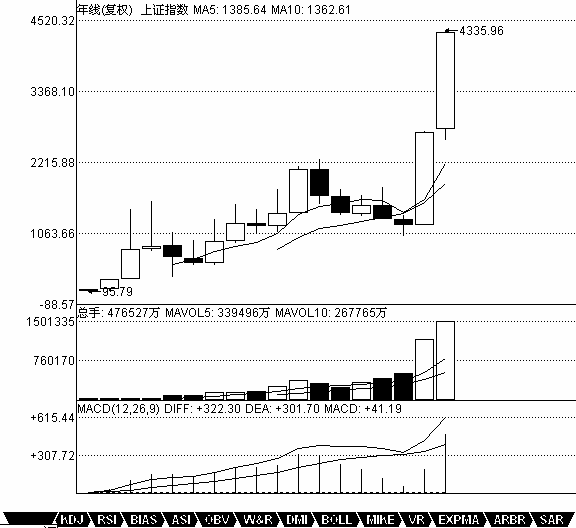

0428 - 教你炒股票21：缠中说禅买卖点分析的完备性¶
日期：(2007-01-09 15:03:58) 分类：[时政经济（缠中说禅经济学）]
前面已经说过三类的买卖点，一个很现实的问题，就是除了这三类买卖点之外，还有什么其他类型的买卖点？答案是否定的。这里必须强调的是，这三类买卖点，都是被理论所保证的，100%安全的买卖点，如果对这三类买卖点的绝对安全性没有充分的理解，就绝对不可能也绝对没有对缠中说禅技术分析理论有一个充分的理解。市场交易，归根结底就是买卖点的把握，买卖点的完备性就是理论的完备性，因此，对这个问题必须进行一个概括性的论述。
所谓100%安全的买卖点，就是这点之后，市场必然发生转折，没有任何模糊或需要分辨的情况需要选择。市场交易，不能完全建筑在或然上，这市场的绝对必然性，是交易中唯一值得信赖的港湾。有人可能要反驳说，世界上没有绝对的东西。那么，世界上没有绝对的绝对性又是哪个上帝所保证的？任何的绝对性，都是建立在“不患”之上的，而市场本身，也是建立在“不患”之上的，“不患”本“患”，“患”本“不患”，但这不影响其精彩与绝对。相关方面的理解，请多看本ID所解释的《论语》。股票市场，不是一个单纯的理论问题。虽然在理论上，本ID可以向所有人揭示其买卖点的完备性，但买卖点不可能自动去买卖，最终的交易是人去完成的，相同的工具，可能在不同的人手下就有了完全不同的结果，而市场只看结果，任何人，哭着喊着说自己所用的理论是完备的、最好的都没用，是人使理论，而非理论使人，要让这人使理论达到理论一般的完美，最终只能靠自己在市场中的修炼了，这就与《论语》有着密切的关系了。修、齐、治、平，同样适用于股票市场的交易。
从上面一系列关于缠中说禅走势中枢的分析可知，在走势中的任何一个点，必然面临两种可能：走势类型的延续或转折。换言之，例如对于一个必然的买点，必须满足以下的两种情况之一：一个向上的延续或一个由下往上的转折。对于延续的情况，能产生的，只能是在一个上升的过程中，否则就无所谓延续了，对于上升的延续中产生的买点，必然有一个中枢在前面存在着；对于转折，被转折的前一段走势类型只能是下跌与盘整，而无论的下跌还是盘整，买点之前都必然有一个走势中枢存在。归纳上述，无论前面的走势是什么情况，都唯一对应着一个中枢存在后走势的延续或转折，这分析对卖点同样有效。
因此，所有买卖点都必然对应着与该级别最靠近的一个中枢的关系。对于买点来说，该中枢下产生的必然对应着转折，中枢上产生的必然对应着延续。而中枢有三种情况：延续、扩张与新生。如果是中枢延续，那么在中枢上是不可能有买点的，因为中枢延续必然要求所有中枢上的走势都必然转折向下，在这时候，只可能有卖点。而中枢扩张或新生，在中枢之上都会存在买点，这类买点，就是第三类买点。也就是说，第三类买点是中枢扩张或新生产生的。中枢扩张导致一个更大级别的中枢，而中枢新生，就形成一个上涨的趋势，这就是第三类买点后必然出现的两种情况。对于更大级别中枢的情况，肯定没有马上出现一个上涨趋势的情况诱人，所以对于实际操作中，任何尽量避免第一种情况就是一个最大的问题。但无论是哪种情况，只要第三类买点的条件符合，其后都必然要赢利，这才是问题的关键。
对于中枢下形成的买点，但如果该中枢是在上涨之中的，在中枢之下并不能必然形成买点，中枢下的买点，只可能存在于下跌与盘整的走势类型中。换言之，一个上涨趋势确定后，不可能再有第一类与第二类买点，只可能有第三类买点。而对于盘整的情况，其中枢的扩张与新生，都不能必然保证该买点出现后能产生向上的转折，因为其扩张与新生完全可以是向下发展的，而对于中枢延续的情况，中枢形成后随时都可以打破而结束延续，也不必然有向上的转折，所以盘整的情况下，中枢下也不必然产生买点。因此，只有在下跌确立后的中枢下方才可能出现买点。这就是第一类买点。 第二类买点是和第一类买点紧密相连的，因为出现第一类买点后，必然只会出现盘整与上涨的走势类型，而第一买点出现后的第二段次级别走势低点就构成第二类买点，根据走势必完美的原则，其后必然有第三段向上的次级别走势出现，因此该买点也是绝对安全的。第二类买点，不必然出现在中枢的上或下，可以在任何位置出现，中枢下出现的，其后的力度就值得怀疑了，出现扩张性中枢的可能性极大，在中枢中出现的，出现中枢扩张与新生的机会对半，在中枢上出现，中枢新生的机会就很大了。但无论哪种情况，赢利是必然的。
显然，第一类买点与第二类买点是前后出现的，不可能产生重合，而第一类与第三类买点，一个在中枢之下、一个在中枢之上，也不可能产生重合。只有第二类买点与第三类买点是可能产生重合的，这种情况就是：但第一类买点出现后，一个次级别的走势凌厉地直接上破前面下跌的最后一个中枢，然后在其上产生一个次级别的回抽不触及该中枢，这时候，就会出现第二类买点与第三类买点重合的情况，也只有这种情况才会出现两者的重合。当然，在理论上没有任何必然的理由确定第二、三类买点重合后一定不会只构成一个更大级别的中枢扩张，但实际上，一旦出现这种情况，一个大级别的上涨往往就会出现。一个最典型的例子，就是大盘在94年7月底部跌到325点后，8月1日跳空高开，5分钟上形成单边上涨突破前面的30分钟中枢，第二天大幅上冲后突然大幅回洗形成5分钟的走势级别的回抽，那时候最高已经摸到快500点，一天半上涨50%，又半天回跌15%，这样的回抽，一般来说是很恐怖的，但如果明白第二类买点与第三类买点的重合道理，就知道这是最好的补进机会，结果第三天又开始单边上扬，第六天达到750点。这是指数上最典型的一个例子了。而且，325点留下的缺口至今未补，中国几十年的一个大牛市，从指数上看，这是一个最重要的缺口了，将支持中国股市几十年甚至上百年的大牛市。

【编者注：此图可能是当时的网友补充的】
补充一句，站在特大型牛市的角度，中国就从来没出现过熊市，大家打开上海的年线图就可以看到，从1992年到2005年，一个完美的年级别缠中说禅中枢的三段次级别走势完成，时间刚好是13年，一个完美的时间之窗。站在年线的角度，中国股市的真正大牛市才真正开始，因为该中枢是中国股市的第一个年中枢，区间在998到1558点。站在年线级别，在下一个年线级别中枢确立之前，中国股市的调整只可能出现一个季级别的调整，而第一个出现的季级别的调整，只要不重新跌回1558点，就将构成中国股市年线级别上的第三类买点，其后至少出现如去年类型幅度的上涨。由此可见，本ID的理论是可以站在如此宏观的视角上判断大趋势的。目前中国的股市没有任何可担心的地方，即使出现调整，最多就是季级别的，其后反而构成第三类买点。而且更重要的是，站在年线的级别看，目前还在第一段的次级别上扬中，要出现第二段的季级别调整，首先要出现月线级别的中枢，目前连这个中枢都没出现，换言之，年线级别的第一段走势还没有任何完成的迹象，这第一段，完全可以走到6000点才结束。今后十几年，中国股市的辉煌，用本ID走势必完美的原则，会看得一清二楚。该原则无论是对年线还是1分钟线，都一视同仁，这就是缠中说禅技术分析理论厉害之处，这叫大小同杀，老少咸宜。
对卖点的分析是一样的，归纳起来，就有缠中说禅买卖点的完备性定理：市场必然产生赢利的买卖点，只有第一、二、三类。 相同的分析，可以证明缠中说禅升跌完备性定理：市场中的任何向上与下跌，都必然从三类缠中说禅买卖点中的某一类开始以及结束。换言之，市场走势完全由这样的线段构成，线段的端点是某级别三类缠中说禅买卖点中的某一类。
思考题：任何一个线段，其端点必然是一买点及一卖点，请完全列出各类买卖点之间可能的组合。如果一线段的端点是同级别的买卖点，有什么组合是绝对不可能出现的。
本文评论获取自靠谱的方式，包含疑似禅师的回复数量：[28]
UID:[1215172700] 昵称：缠中说禅 日期：(2007-01-09 15:13:32)
大盘没什么可说的，人寿开在40附近，短线有所震荡是正常的，最主要换手不足，太惜售，短线的关键就是要把这些人吓出来。中线该股一点问题都没有，看看茅台上市时多少钱，现在多少。中国最大的资源就是人，人寿搞的就是人，没有人，酒也废了。各位关键在持住股票，好像本ID发梦时说的某药，短短10个交易日，上涨40%，过两天一算还要多，但能持住的有几个？做人专一点，别前戏都没开始就早泄了。今天下午有事，有问题的请放下，晚上回答。
UID:[0] 昵称：[匿名] MM 日期：(2007-01-09 15:14:20)
报到
UID:[1215172700] 昵称：缠中说禅 日期：(2007-01-09 15:16:30)
就算是419，也要把前戏、高潮弄足了，牛市一定不能当早泄男。先下，再见。
UID:[0] 昵称：[匿名] CCTV 日期：(2007-01-09 15:16:55)
学习
UID:[0] 昵称：[匿名] 过客 日期：(2007-01-09 15:20:00)
不当早泄男，哈哈`
UID:[0] 昵称：[匿名] 过客 日期：(2007-01-09 15:21:15)
999能到20吗？
UID:[0] 昵称：[匿名] CCTV 日期：(2007-01-09 15:22:20)
[匿名] 过客 2007-01-09 15:21:15
999能到20吗？
==
我看779到20应该没问题。999翻倍那是肯定的。
UID:[0] 昵称：[匿名] 悠悠悠哉 日期：(2007-01-09 16:29:45)
大姐 你讲的那3类买卖点 在你以前的那些文章里的啊？我找过了 找不到 告诉我一下啊 很多人也想知道的啊！
UID:[0] 昵称：[匿名] 悠悠悠哉 日期：(2007-01-09 16:36:19)
等着大姐的回复那 大姐有空一定要回一个的！
UID:[0] 昵称：[匿名] 罗锅 日期：(2007-01-09 19:59:23)
[匿名] 空读 2007-01-09 19:47:29
我见少识短,419是什么?
BBBBBBBBBBBB
一夜情！！！！！！！！！！！！！！！！！！！！！！
UID:[1215172700] 昵称：缠中说禅 日期：(2007-01-09 21:09:07)
[匿名] 悠悠悠哉 2007-01-09 16:29:45
大姐 你讲的那3类买卖点 在你以前的那些文章里的啊？我找过了 找不到 告诉我一下啊 很多人也想知道的啊！
==
认真读过前面文章的，都不应该有这样的问题。面对市场，不经过一番洗心革面，是不可能战胜市场的。市场里，任何的侥幸都只能是暂时的，而且会被市场所加倍索还。
UID:[1215172700] 昵称：缠中说禅 日期：(2007-01-09 21:10:58)
wy1499 2007-01-09 19:25:49
沉醉你对伟星股份走势的疑问，我也同样碰到了，就以前缠MM曾提到的北辰在11.7-12.6的涨势中也出现过，在30分钟图上，无论从均线走势力度还是MACD指标，11月13日11点时涨势已形成背驰，可后面却迭创新高，证明这其实是个中继，如果不是事后看图，我很可能选在11.13出货了，个人觉得对于买卖点的把握还要掌握其他方面的知识，缠MM说过真正的高手的功力在于中继和转折的判断上，我现在就是经常把中继错判成转折，特别是在小级别图上，不过结合大级别图，减少操作频率，成功率可以高一些，当然喽，最好的办法还是期待缠MM的后续内容吧。楼主觉得我的看法，对吗？对了，楼主以前提示过时间之窗，那是在日线图和30分钟图上以一个月为准，怎么到大盘的年线上变13年了，两者有什么数学关系吗？
===
时间之窗又不是只有一种。以后会说到的。
UID:[1215172700] 昵称：缠中说禅 日期：(2007-01-09 21:25:18)
[匿名] 无知 2007-01-09 20:35:57
缠姐，我资金量比较小，今天没买国寿，有没必要卖掉不太动的股票买进国寿啊？
===
本ID10几天前不已经有一个关于药的梦，那个梦就是为各位小资金们准备的，买了以后就一直等着，继续学论语、学技术、学其他。怎么都不明白呢？本ID随便发一个梦，你就进入梦乡，耐心地等待最后至少把1变成2、3的，期间就好好学习、天天向上，为什么要整天跑来跑去？人的贪婪总是很可笑的，为什么一定要每天都发一个梦，一个梦让你把1安全地变成2、3，难道还需要其他的梦吗？那些每天发一个梦的人，最终能把1变成2、3吗？本ID新来的那一笔资金其实弄了5只股票，这个药已经是最安全的，10个交易日让你从1变成1。4，不敢说是最牛的，肯定也是最近比较牛的了。本ID另外4个都不愿意说了，只要其中一只就能达到目的，没必要说那么多了。当然，本ID也可以把其他四只说出来，其中两只和那药一样，都是深圳的，本ID比较懒，现在代码太多，懒得记，都找的是代表只有两种数字的，另外两只，和这三只里的其中两只代码相连。这5只股票，最终都像去年的酒一样的，这肯定是无疑的。但各位如果资金小的，买一只就够了。如果有药，就存放好，小心受潮。各位，专一点吧，每天跑来跑去的，一定挣不了大钱。至于人寿，如果你专一，一定没问题，如果你不专一，肯定受折磨。
UID:[1215172700] 昵称：缠中说禅 日期：(2007-01-09 21:32:33)
去年成绩不好的，归根结底都是心态问题，先把心态调整好，别整天希望天上掉馅饼，而有时候真的天上掉馅饼了，又抓不住，这样怎么可能挣钱？
UID:[1215172700] 昵称：缠中说禅 日期：(2007-01-09 21:37:00)
[匿名] 学习 2007-01-09 21:26:44
LZ,形成更大级别的中枢,其区间是两个区间的总和吗?
====
例如原来是日线的，现在变成周线的，那就在周线上找次级别也就是日线上三段走势，按中枢的公式去确定，并不存在两个区间总和的问题。
UID:[1215172700] 昵称：缠中说禅 日期：(2007-01-09 21:41:07)
[匿名] 舍小赢大 2007-01-09 21:32:50
楼主腐败回来了 我对工行的背驰判断对吗 [匿名] 舍小赢大 2007-01-09 16:38:14 缠MM 工商银行 5分钟K线图上已经是女上位背驰了 我的判断正确吗？
===
要学会从大角度看问题。工行这次下来的调整，必然需要一个走势类型完美的问题，例如一个日线级别的调整，就必然在30分钟上有三段走势，想想现在是第几段，意味着什么？这样就能很从容地安排自己的操作了。只有定好大方向，才有必要看小细节。
UID:[1215172700] 昵称：缠中说禅 日期：(2007-01-09 21:47:01)
[匿名] 无言 2007-01-09 21:39:47
缠姐,好人啊!功德无量!不但不收学费,还提供饭票.虽然不知缠姐的票是什么,但自从学了缠姐的理论,现在每天稳定收益3个点.谢谢!
===
本ID原来的想法是，各位如果资金都不太大，要好好学习又不安心，整天想去找工作吃饭，就提供一剂药给大家当饭吃，让大家安心学习，现在看来，不知道有多少人理解本ID的意图了。偷心不死，是学不了真工夫的。有时候，把药煮好让大家吃，估计也不一定有用的，关键还是人自己，本ID的理论也如同那药，就算大家都知道都明白，实际操作下来，好是看自己的心态。统计一下，有谁能在6元上下买那药，现在还放着，然后安心学习研究的？
UID:[1215172700] 昵称：缠中说禅 日期：(2007-01-09 21:57:27)
[匿名] 不争而胜 2007-01-09 21:46:45
LZ您说资金量30W的持股最好不要超过3只，我根据您的理论抓来抓去收藏了一大把，虽都有赢利，但想专一点，您能否帮忙剔除一些。600824，配股后5块5左右进；000928，4块9进；000520，3.2000429,4.7000100,2.2谢谢您了！
===
告诉你原则，然后自己思考，才有进步。站在周线的角度，一个漂亮的第一类买点与第二类买点相组合的，都应该持有。目前很多股票，站在周线角度，都出现第一类与第二类买点，面临突破，这些股票在今年一定会有好表现的，什么时候加速？就是在周线、或至少在日线上出现第三类买点，然后就进入加速。符合以上要求的，都应该保留。如果一个股票，在周线或至少在日线上出现第三类买点了，那就一直持有等待相同级别或至少是次级别的第一类卖点出现。股票其实就这么简单。当然，如果你短线有时间，就按更低级别的图打短差，如果没时间，也没必要干了。
UID:[0] 昵称：[匿名] 公子白 日期：(2007-01-09 21:58:42)
[匿名] 沉醉 2007-01-09 21:56:41
当然，本ID也可以把其他四只说出来，其中两只和那药一样，都是深圳的，本ID比较懒，现在代码太多，懒得记，都找的是代表只有两种数字的，另外两只，和这三只里的其中两只代码相连。
哪个猜的出..?
-
000600？000777？000998？
UID:[1215172700] 昵称：缠中说禅 日期：(2007-01-09 22:00:06)
太晚了，先下，各位好好休息，好好思考，一定要在心里建立自己坚固的港湾，才可能在实际操作中从容面对风浪。再见。
UID:[0] 昵称：[匿名] 公子白 日期：(2007-01-09 22:01:58)
[匿名] 笨笨猪 2007-01-09 21:59:28
关于那支药，我牢记不能追涨，就没买......
-
LZ叫买的时候才6元，属于第三类买点，应该不算追涨。我是7元多点就下来了，汗`
UID:[0] 昵称：[匿名] 悠悠悠哉 日期：(2007-01-09 22:16:07)
惭愧啊 ！前面不是看不懂吗，所以没看啊。希望大姐给个机会啊，小弟一定努力学习。不过，没有图解的真的很难搞懂的，真的，体谅一下像我这样愚笨的人吧，善哉，善哉啊！什么药啊？都不知道在讲什么的，艾～
UID:[0] 昵称：[匿名] 罗锅 日期：(2007-01-09 23:26:00)
[匿名] 不争而胜 2007-01-09 22:12:09
[匿名] 公子白
000600？000777？000998？
嘿嘿，LZ很“狡猾”的，没有说另外两只都在深圳啊，买错了可就别怪人了。不过买深市的股票赚钱的几率大点，毕竟现在深圳股票少嘛，看看现在的大笨象，都在上海跳舞，深成指基本没失真，比沪综指更有标志性。
BBBBBBBBBB
你大纱帽呀‘？？？？？？？？？？？？代码连着的能不是深圳的吗？？？？？？？？？？？？？？？？小人之心！！！！！！！！！！！！！！！！！！！！！！！！！！！！！！！！！！！！！！
UID:[0] 昵称：[匿名] 罗锅 日期：(2007-01-09 23:30:28)
[匿名] 一笑而过 2007-01-09 22:49:51
各位关键在持住股票，好像本ID发梦时说的某药，短短10个交易日，上涨40%，过两天一算还要多，但能持住的有几个？做人专一点，别前戏都没开始就早泄了。
---------
本ID也可以把其他四只说出来，其中两只和那药一样，都是深圳的，本ID比较懒，现在代码太多，懒得记，都找的是代表只有两种数字的
----------------------
大家看看,肯定是三九医药了!
BBBBBBBBBBB
你大纱帽呀！！！！！！！！！！！！！！！！！！！全地球的人都知道数学妹妹说的药就是999！！！！！！！！！！！！！！！！！！！！！！！！！！！！！！还用你现在说？？？？？？？？？？？？？？？？？？？？？？？？？？？？？？]我说数学妹妹另外四只股票是000777、000600、000998、000599！！！！！！！！！！！！！！！！！！！！！！！！！
UID:[0] 昵称：[匿名] 罗锅 日期：(2007-01-09 23:31:52)
[匿名] 空读 2007-01-09 23:30:04
偶笨,偶猜个大家不要信605,606.
===
000605，三个数字呀！！！！！！！！！！！！000606，盘子太小啦！！！！！！！！！！！！！！
UID:[0] 昵称：[匿名] 司马光 日期：(2007-01-09 23:51:29)
[匿名] 面首甲 2007-01-09 23:47:28
人不可贪婪!不过姐姐菩萨心肠,让我来再点拨大家一下:000878,其他的自己去领悟吧!
-
不可能，000878有三个数字。罗锅说的比较靠谱。000666、000099也有可能
UID:[0] 昵称：[匿名] 公子白 日期：(2007-01-10 00:00:36)
认真分析，楼主第一只999是在第三类买点买的，那后面四只，一定也是，所以肯定是第三类买点的000800，000600，还有000998、000889是第二类买点，
UID:[0] 昵称：[匿名] Q 日期：(2007-01-10 08:55:26)
QIANG